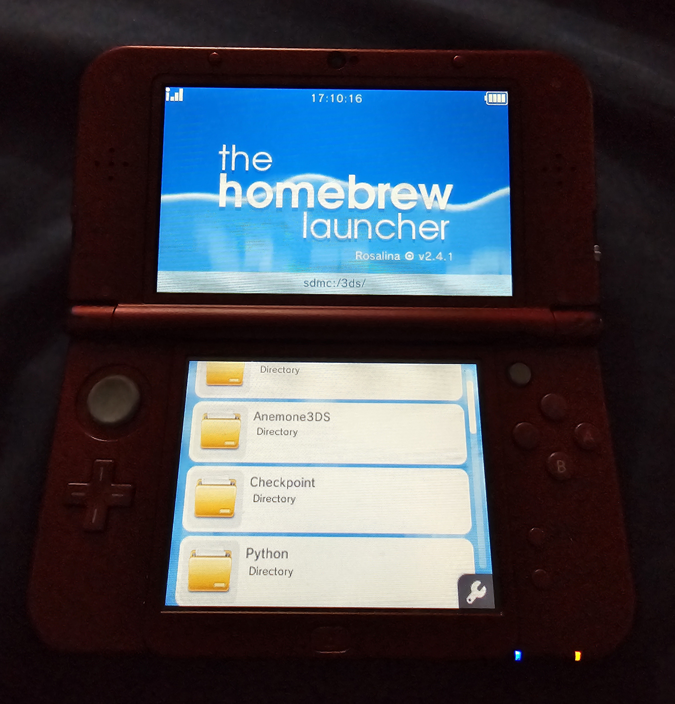
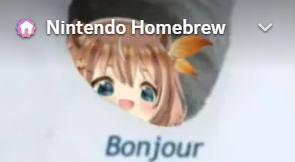
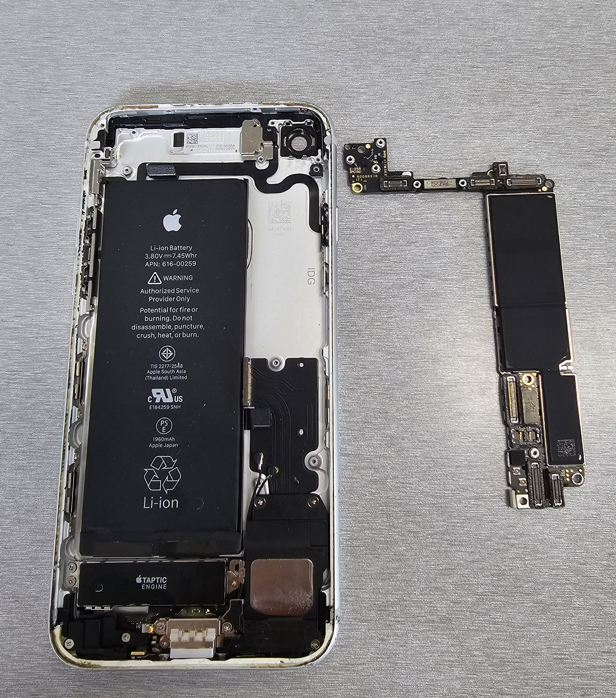
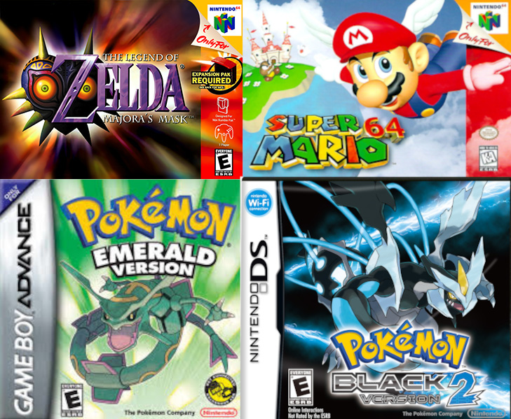
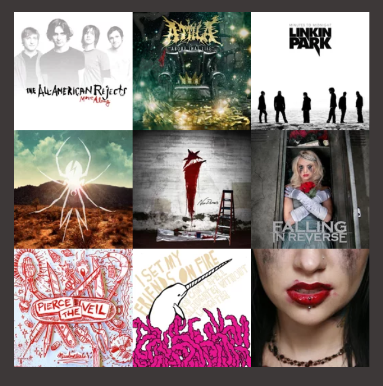
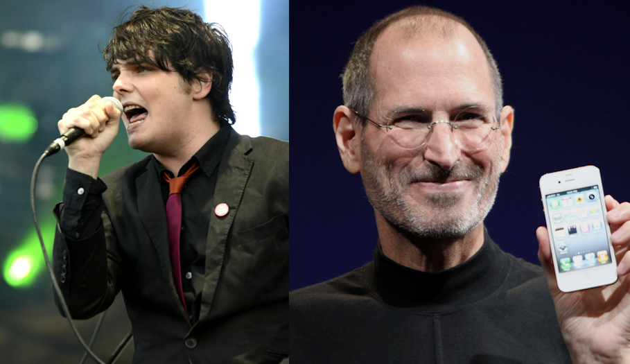

My favorite console is the Nintendo 3DS. It has a robust library
of titles, and can play all previous Nintendo handheld games thanks to homebrew
and emulation.

I occasionally volunteer in the Nintendo Homebrew Discord. I help
people troubleshoot 3DS soft-mod issues, and assist with hardware repair questions.

I have a small side business in which I assist people with computer issues,
and repair phones and electronics.

My favorite game is "The Legend of Zelda: Majora's Mask" for the Nintendo 64.
I also love "Super Mario 64", and "Pokémon Emerald".

Some of my favorite bands are: The All-American Rejects,
Attila, Linkin Park, and My Chemical Romace.

Some of my biggest inspirations are: Steve Jobs, Gerard Way, my best friend
Devante, and my father.